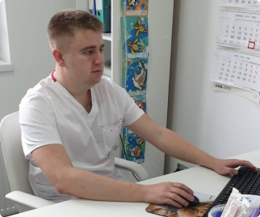

Неврология
Стоимость лечения
Прием (осмотр, консультация) врача-невролога первичный
1500 рублей
Прием (осмотр, консультация) врача-невролога повторный
1300 рублей
Выезд врача-невролога на дом
2500 рублей
Врачи направления

Лобурь Виктор Геннадьевич
Образование: 2018 г. - Кубанский государственный медицинский университет (лечебное дело). Базовое образование. 2020 г. - Кубанский государственный медицинский университет (неврология). Ординатура
Записаться на консультацию